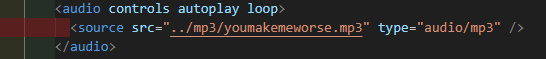

Welcome to Coding!
with "<iframe>" you can include other websites into your own, you can play around with that quite alot!
shift = run | arrow keys = movement | space = jump
Ben Schuller - You Make Me Worse
include audios like this:
If you're wondering about the path ".." means the same as "go a folder back", and "/mp3" is just a folder name. type has to be specific to the audio though.
Also fun fact: when you write something inside of a tag aside from the tag name ("src" as example), then you use something called an attribute. attributes are there to manipulate the tags. The only one necessary for audio would be controls. Controls just enables the visual MP3 player, otherwise you could also have music automatically play in the background.